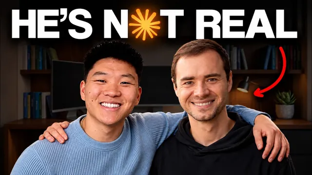

클로드로 안드레이 카파시를 한 명 더 만들었다

원본 영상 보기 →
- AI 품질은 모델이 아니라 시스템에 담긴 전문 지식이 결정해요
- 원문 더미보다 '연결된 위키'가 핵심이에요
- "작동한다"는 말 전에 실행을 강제하는 장치가 신뢰를 만듭니다
한 줄 요약
Nate Herk가 Andrej Karpathy의 블로그·강의·GitHub·X 게시물을 70만 단어 넘게 모아 위키로 정리했어요. 거기서 뽑은 7가지 교육 원칙을 Claude Code의 서브 에이전트(sub-agent)와 스킬(skill), 실행 관문 훅(hook)으로 바꾸는 네 단계를 공개합니다. 핵심은 사람을 흉내 내는 게 아니라 그 전문가가 생각하고 가르치는 방식을 복제해 내 프로젝트에 붙이는 거예요.
전체 내용 정리
목소리가 아니라 '가르치는 방식'을 복제했어요
Andrej Karpathy는 2015년 OpenAI 창립 멤버였고, 이후 테슬라에서 5년쯤 AI 부문을 이끌며 오토파일럿 컴퓨터 비전 팀을 지휘했습니다. 그 뒤 교육에 전념하려고 유레카 랩스(Eureka Labs)를 세웠고, 영상에 따르면 올해 5월부터는 Anthropic 사전 학습 팀에서 일하고 있어요.
Nate가 만든 건 그의 음성 복제본도, 말투 흉내도 아닙니다. 그의 책과 블로그, 강연에서 뽑은 일곱 가지 원칙을 따라 "Karpathy처럼 설명하고 가르치는" 에이전트예요.
가장 작은 버전부터 만들기, 실행 전에 결과 예측하기, 망가진 버전을 먼저 보여주기, 직접 돌려보지 않은 코드는 넘기지 않기 같은 원칙이 들어갑니다.
AI의 "그럴듯하지만 틀린" 습관이 문제였어요
Claude에게 모르는 걸 설명해 달라고 하면 과하게 설명하거나, 설명하다 말고 내용을 지어내기도 합니다. 결국 배운 건 없고 더 막막해지죠. 고객용 결과물이라면 더 심각해요. 코드를 배포한 뒤 문제가 생겼는데 고치지도, 설명하지도 못하는 상황이 됩니다.
Karpathy 본인도 작년 8월에 비슷한 얘기를 했어요. Claude Code가 코드를 짜는 동안 옆에서 가르쳐 주길 바랐는데, AI가 설명보다 코드 작성에만 집중해서 전혀 안 되더라는 겁니다.
더 큰 이유는 따로 있습니다. AI 결과물의 품질은 시스템에 담긴 전문 지식에 달려 있어요. 모든 분야의 전문가가 될 수는 없지만, 실제 전문가의 말을 전부 모아 Claude가 쓸 수 있게 정리하고 이해될 때까지 대화하는 건 할 수 있습니다. 이 방식은 좋아하는 영업 강사든, 작가든, 돈 내고 배우는 코치든 똑같이 적용돼요.
1단계: 자료를 모으고 위키로 묶습니다
Claude Code에서 쓰는 프롬프트는 총 여섯 개예요. 먼저 블로그, 강의 녹취록, GitHub 저장소, X 게시물을 긁어옵니다.
유튜브 자막은 무료 파이썬 패키지인 YouTube Transcript API와 yt-dlp로 가져왔고, X 게시물은 유료 API인 twitterapi.io를 썼어요. 2023년 이후 거의 모든 게시물을 가져오는 데 1달러 정도 들었습니다. 소스마다 에이전트를 하나씩 병렬로 돌려서 45분~1시간 만에 70만 단어가 모였어요.
문제는 그다음입니다. 정리 안 된 글 더미는 건초 더미에서 바늘 찾기거든요. 그래서 Karpathy가 지난 4월 제안한 방식을 그대로 썼습니다. LLM이 원본은 건드리지 않고 전부 읽어서 페이지끼리 연결하고 색인과 로그를 유지하는 위키예요. 본인이 gist로 공개한 방식입니다.
결국 Karpathy의 뇌를 Karpathy 본인이 제안한 메모리 시스템에 담은 셈이에요. Obsidian은 보기 좋게 만드는 시각화 레이어일 뿐 필수는 아닙니다. 위키에는 소스별 페이지와 함께 주제·원칙·규칙·설명 방식·디버깅 방식 페이지가 있고, 모든 규칙은 출처로, 모든 출처는 그게 뒷받침하는 규칙으로 연결돼요.
2단계: 출처가 붙은 7가지 규칙을 뽑습니다
"과거에 한 말을 아는 것"에서 "그처럼 생각하는 것"으로 넘어가는 단계예요. 위키에서 규칙을 뽑되, Claude가 지어내지 못하도록 모든 규칙을 정확한 인용구와 출처에 연결하게 했습니다.
나온 일곱 가지는 이렇습니다. ① 직접 만들어 보지 않으면 이해한 게 아니다 ② 일차 항(first-order term)을 우선하라, 가장 중요한 핵심을 찾아 작동시키고 한 번에 하나씩 추가한다 ③ 예측하고, 실행하고, 비교하라, 대부분은 학습이 되지만 눈에 안 띄게 조금씩 나빠지기 때문이다 ④ 잘못된 버전을 먼저 보여줘라, 그는 녹화 중에 자기 버그를 일부러 남긴다 ⑤ 주장하지 말고 증명하라 ⑥ 무엇을 가정했는지 밝혀라 ⑦ 단순한 것이 더 좋다.
여섯 번째가 중요해요. Claude Code에 대한 Karpathy의 가장 큰 불만이 바로 모델이 잘못된 가정을 하고 확인도 없이 실행해 버린다는 점이었거든요.
인용구를 누르면 타임스탬프나 원문 페이지가 열리고, 출처가 없으면 에이전트는 "이건 Karpathy 발언을 바탕으로 추론한 것"이라고 밝혀야 합니다.
3단계: 서브 에이전트·스킬·실행 관문으로 만듭니다
네 번째 프롬프트로 파일 두 개를 만들어요.
하나는 서브 에이전트입니다. 별도 지침과 메모리, 컨텍스트 윈도우를 가진 독립 Claude 인스턴스라, 작업을 넘길 때 전체 대화를 끌고 가지 않아요. 안에는 일곱 가지 규칙과 대화 방식, 매 작업마다 도는 루프가 들어 있는 미니 Karpathy입니다.
다른 하나는 스킬이에요. /karpathy-teach에 막힌 부분을 적으면 규칙이 적용된 에이전트로 넘어가고, 규칙별 체크리스트로 답변을 평가해서 보여줍니다.
다섯 번째 프롬프트로는 실행 관문(run gate)을 붙여요. 에이전트가 턴을 끝내려 할 때 즉시 도는 작은 스크립트인 훅(hook)인데, 코드를 짜고 실행하지 않았으면 "작동한다고 말하기 전에 먼저 실행해"라며 답변을 막습니다. 검증 루프를 기본으로 내장하는 셈이죠. 이 훅도 직접 코딩할 필요 없이 프롬프트로 요청하면 됩니다.
4단계: 실제로 돌려보고, 계속 배우게 합니다
첫 테스트는 바이트 페어 토크나이저(byte pair tokenizer, LLM이 텍스트를 숫자로 바꾸는 장치)를 만들고 원리를 알려달라는 요청이었어요.
에이전트는 코드보다 "완료 기준"을 먼저 적었습니다. 그다음 작은 입력에서 작동하는 최소 버전을 만들고, 실행 전에 예상 결과를 말한 뒤 실제 출력을 보여줬어요. 이어서 어떤 버전이 왜 오류가 나는지 보여주고 고친 다음, 실행한 작업과 결과, 변경 사항, 단계별로 따른 규칙을 정리해 줬습니다.
두 번째는 검토 기능이었어요. Claude가 짜준 유튜브 댓글 수집 스크립트는 Claude 테스트에선 잘 돌았는데, 에이전트가 코드를 읽더니 일반 Windows 터미널의 이모지에서 충돌할 거라고 예측했습니다. 실제로 파일을 쓰기도 전에 멈췄어요. 그러고는 불필요한 부분을 걸러 배포 가능한 형태로 정리하고, 줄인 버전이 같은 문제를 잡아내는지 두 버전을 나란히 돌려서 증명했습니다.
마지막으로 이 시스템은 계속 배웁니다. /karpathy-ingest에 링크 하나를 넣으면 소스 페이지를 만들고 관련 페이지·색인·로그를 갱신해요. 지난 7월 Karpathy가 올린 "10분 동안 음성으로 횡설수설하고 모델이 정리하게 하는" 게시물을 넣자, 6번 규칙에 "요청이 모호하면 추측 대신 질문하라"는 동작이 추가됐습니다. 출처 하나뿐이던 규칙이 두 번째 출처를 얻어 진짜 규칙이 된 거예요.
사고는 외주를 줘도 이해는 외주를 줄 수 없어요
네 단계를 요약하면 이렇습니다. 한 사람의 머릿속 전부를 Claude에게 주고 위키로 정리했고, 인용이 붙은 규칙으로 바꿨고, 말하기 전에 실행하게 했고, 실제 사례로 테스트했어요.
Nate는 Karpathy가 올해 한 말로 마무리합니다. "사고는 외주를 줄 수 있어도 이해까지 외주를 줄 수는 없다." 모든 분야의 전문가가 될 필요는 없지만, 전문가를 데려와 그 지식 위에서 더 나아갈 수는 있다는 거죠.
핵심 인사이트
- AI 품질은 모델이 아니라 시스템에 담긴 전문 지식이 결정해요: 내가 전문가가 아니어도 실제 전문가의 원문을 모아 구조화하면, AI가 그럴듯한 답이 아니라 근거 있는 답을 냅니다.
- 원문 더미보다 '연결된 위키'가 핵심이에요: 70만 단어를 그냥 던지면 건초 더미가 됩니다. 규칙과 출처가 서로 연결된 구조여야 AI가 지어내지 않고, 새 자료가 들어올 때마다 규칙이 단단해져요.
- "작동한다"는 말 전에 실행을 강제하는 장치가 신뢰를 만듭니다: 훅으로 실행 검증을 의무화하면, Claude 환경에선 되는데 고객 환경에선 깨지는 문제를 배포 전에 잡을 수 있어요.
오늘 당장 해볼 것
- 가장 신뢰하는 업계 전문가(강사·작가·코치) 한 명을 정하고, 그 사람의 블로그·유튜브·책 목록을 한 문서에 링크로 모아 두세요. 자료를 흩어 두면 아무것도 시작되지 않습니다.
- ChatGPT나 Claude 프로젝트에 그 자료 몇 개를 넣고 "이 사람이 반복해서 강조하는 원칙 5개를 정확한 인용과 출처를 붙여 정리해 줘, 출처 없으면 추론이라고 표시해 줘"라고 시켜 보세요. 출처를 강제하는 게 포인트예요.
- 자동화 업체에서 결과물을 받을 때 "작동한다고 하기 전에 실제 우리 환경(운영체제·브라우저·데이터)에서 돌려본 결과를 보여 달라"를 검수 기준에 넣어 보세요.